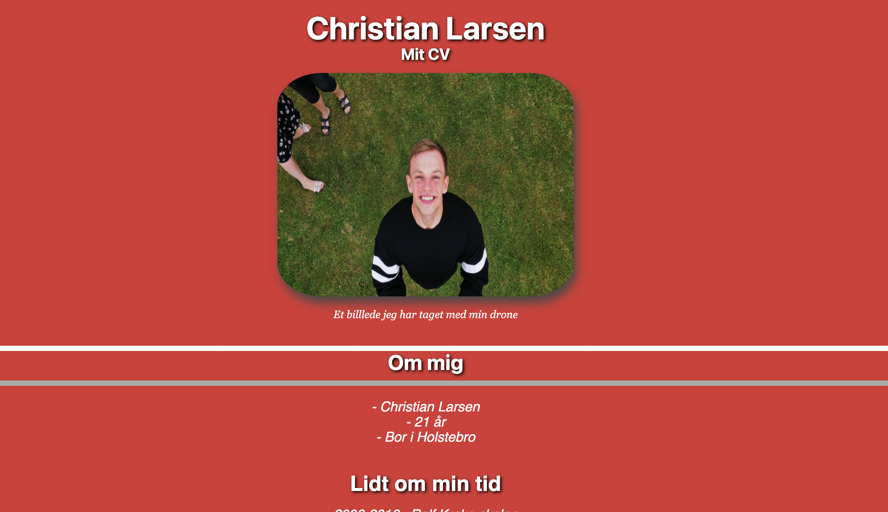
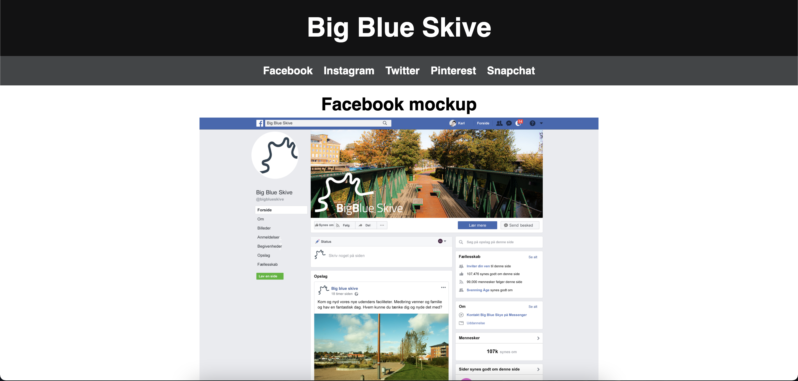
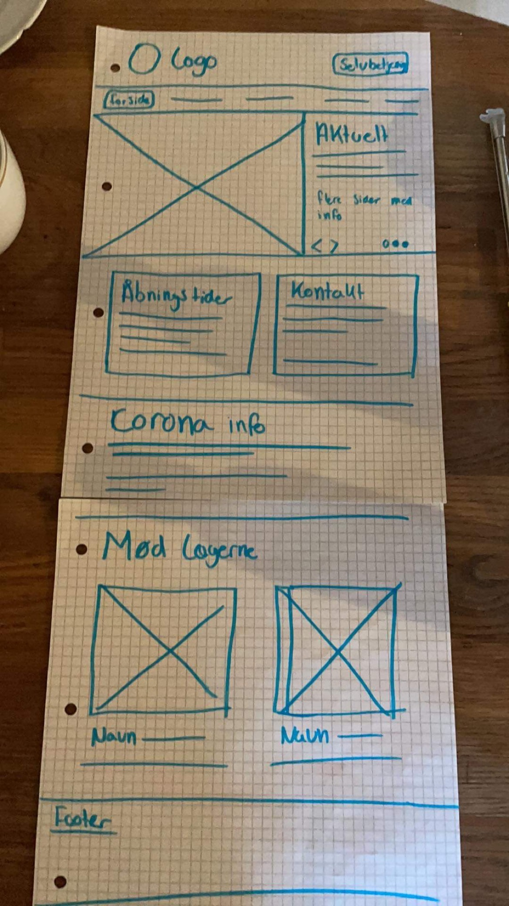

Det var her hvor vi virkelig kom på en prøve og skulle lave vores første hjemmeside.
Vi skulle stå på egne ben, vi havde ikke haft alverdens design undervisning endnu,
så min hjemmeside blev knaldrød.
På vores hjemmeside skulle der indgå et cv af os selv, 2 eller flere sider omkring mine forventninger til uddannelsen.
Vi skulle selv kode 3 sider, og selv lægge det over på skolens server.
Herunder ses hvad der blev slutningen på Tema 1 (min hjemmeside).
I Tema 2 skulle vi lave 5 sociale markedsførings ideer til 5 forskellige SoMe kanaler. Vi skulle rundt omkring i skive by for at filme, tage billeder og interviewe folk.
Herunder ses et af de mockups vi skulle lave for Big Blue Skive.
Et mockup er en "model" af hvordan den rigtige facebook side, for eksempel, kan se ud. det
kan også være et logo på en kop eller lignende.
Billederne vi fik taget til nogle af disse SoMe kanaler var ligegyldige, de kommer ikke med det rigtige budskab.
Vi skulle tage et billede til pinterest, men fordi vores sløring ikke var korrekt, virkede det som om vi gjorder grin med denne kanal.
Dette har lært mig, at man virkelig skal tænke over hvilket budskab man ønsker at komme ud med til modtager.
I tema 3 skulle vi afprøve vores viden, færdigheder og kompetencer i et bredere perspektiv, og gøre os i stand til at designe, udvikle og implementere et website, hvor indholdet til dels er givet på forhånd.
Vi kunne vælge mellem to hjemmesider som vi skulle redesigne.
Det handlede om hjemmesiderne, Skive handel og Centrumlægerne skive.
Min gruppe valgte at lave om på Skive handels hjemmeside, da vi så mest potentiale i denne. Vi startede med et wireframe over hvordan vi tænkte vi gerne ville lave hjemmesiden og designe den.
I Tema 4 handlede det om onepage webdesign. Vi blev inddelt i grupper af 2, og skulle "trække" en vare af Niels, som vores hjemmeside skulle handle om. Vores gruppe trak en pose chips fra Kims.
Siden skulle handle om "Jørgen" som har været frontfigure for Kims i 23 år.
Vi fik af vide at det ville være en god ide, at lave det man ikke var så god til. Det vil sige at jeg skulle gerne have kodet lidt i mere i dette projekt,
da jeg var syg den dag vi havde om gridsystem, men jeg kom næsten ikke til at kode noget da min makker i gruppen sagde "det er bare onepage, der er ikke meget der skal kodes, så den fikser jeg hurtigt."
Jeg fik derfor desværre ikke så meget ud af dette projekt, udover at tage billeder i rigtigt lys og komprimere dem.
Tema 5 handlede om CMS systemerne. Her skulle vi se og arbejde med 3 systemer som var Wordpress, Umbracuno og Joomla.
Sammetid med vi afprøvede disse 3 systemer skulle vi også skrive en rapport for første gang. Rapporten skulle handle om de 3 systemer, hvordan de virkede, hvilke forskelle der var og hvad vi ville
råde vores chef til at benytte sig af.
Herefter skulle vi skrive en mini rapport omkring disse 3 systemer. Hvordan virker de? Hvad virkede ikke? Hvad kan man?